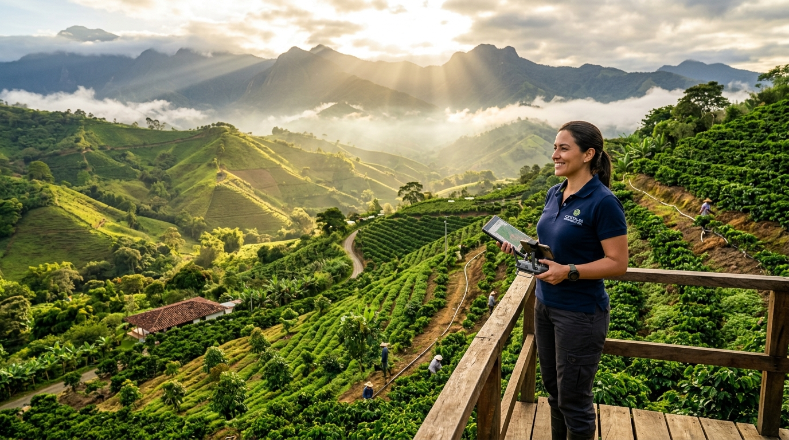

Transformamos los datos del sector agroempresarial en certeza analítica y rentabilidad.
Desarrollamos servicios avanzados de Tecnologías de la Información (TI) y Ciencia de Datos para estructurar, auditar y optimizar las operaciones de empresas agropecuarias, cooperativas y agroindustrias. Maximizamos el margen financiero, la trazabilidad corporativa y el control de gestión en cada frente operativo.

Ciencia de datos e ingeniería de procesos para el sector agroempresarial
Lideramos la transformación digital y analítica de empresas agropecuarias, cooperativas y agroindustrias. Creemos que la competitividad y la rentabilidad corporativa no dependen del azar, sino del rigor analítico y el control integral de las operaciones de negocio.
Nuestra Razón de Ser
En Agro Stat & Tech Co. trasladamos la ingeniería de software, la arquitectura de datos y la bioestadística aplicada directamente a la toma de decisiones gerenciales y operativas. Desarrollamos servicios basados en TI y analítica para estructurar, auditar y optimizar los flujos de trabajo de las organizaciones agroempresariales.
Entendemos que detrás de cada consolidación operativa, registro de labores de campo o planilla de abastecimiento, existen agroempresas, cooperativas y equipos humanos que exigen procesos predecibles, trazables y financieramente sostenibles.
"Nuestra misión es potenciar la productividad y eficiencia de las organizaciones del sector agroempresarial y agroindustrial mediante servicios especializados en TI y analítica de datos, generando rentabilidad demostrable y sostenibilidad operativa para toda la cadena de valor."
Agro Stat & Tech Co.
Servicios de TI y ciencia de datos para la productividad y rentabilidad del sector agroempresarial.
100% Basados en Datos
Reemplazamos la intuición y la dispersión operativa por analítica rigurosa, trazabilidad de procesos y cuadros de mando gerenciales verificables.
Sostenibilidad Agroempresarial
Mejoramos la eficiencia operativa y el margen económico de las empresas y asociaciones agropecuarias, asegurando un modelo de negocio rentable y competitivo.
Soberanía de Datos Corporativos
La información de la agroempresa es su activo estratégico más valioso. Garantizamos la propiedad inalienable de sus datos mediante estándares abiertos y auditorías claras.
Apuesta al Futuro del Sector
Ingeniería de procesos (BPMN) y analítica moderna para consolidar un sector agroempresarial tecnificado, resiliente y de clase mundial.
Servicios de TI y analítica para la gestión agroempresarial integral
Nuestras soluciones combinan arquitectura de datos empresariales, estadística de procesos y modelado BPMN para transformar los registros de las operaciones agroempresariales en resultados financieros tangibles.
App Móvil de Gestión Operativa (Offline-First)
Digitaliza el registro de labores operativas, control de cuadrillas, asignación de jornales y recepción de producto en campo, funcionando de forma 100% autónoma sin depender de conectividad a internet.
- Operación 100% Offline: Captura continua en sedes y predios remotos sin pérdida de información corporativa.
- Sincronización Automática: Transmisión incremental y segura a la nube central tan pronto se detecta enlace celular o red corporativa.
- Control de Cuadrillas y Costos Laborales: Asignación ágil de tareas, seguimiento de rendimientos y liquidación confiable de mano de obra.
Inteligencia de Negocios (BI) & Control Gerencial
Tableros gerenciales interactivos que transforman datos operativos, inventarios y costos en indicadores clave de rendimiento (KPIs) para comités directivos y toma de decisiones ejecutivas.
- Cuadros de Mando en Tiempo Real: Visualización consolidada de volúmenes, calidades, despachos y márgenes por centro de costos.
- Análisis Comparativo Histórico: Evaluación multitemporal de rendimiento operativo entre unidades de negocio, sedes o predios.
- Reportes Ejecutivos Automatizados: Generación de informes analíticos para juntas directivas, entidades financieras y auditorías.
Curaduría Lakehouse & Datos Agroempresariales
Centralizamos, limpiamos y estructuramos las fuentes dispersas de la agroempresa (planillas operativas, sistemas contables y ERPs corporativos como SAP, AgroWin o Siigo) bajo estrictos contratos de calidad.
- Data Contracts y Cuarentena de Errores: Validación automatizada para evitar duplicidades e inconsistencias en la base de datos empresarial.
- Trazabilidad y Linaje para Certificaciones: Cumplimiento estricto de estándares normativos, auditorías de calidad y regulaciones de exportación (ej. EUDR).
- Estructuración de Centros de Costos: Visibilidad exacta del costo unitario, absorción de gastos indirectos y margen neto por unidad operativa.
Optimización de Procesos BPMN & Farm FinOps
Rediseñamos los flujos de procesos agroempresariales y de abastecimiento mediante diagramas BPMN 2.0 To-Be, eliminando cuellos de botella y maximizando el margen financiero de la organización.
- Eliminación de Tiempos Muertos: Sincronización entre cuadrillas operativas, centros de acopio, transporte y recepción en planta.
- Control de Costos Ocultos y Mermas: Monitoreo de insumos, rendimientos de mano de obra y fletes logísticos por tonelada movilizada.
- Modelo de Valor Compartido (Share-of-Gain): Vinculamos nuestros honorarios directamente a las eficiencias y ahorros comprobables generados en la agroempresa.
Rigor metodológico y analítico al servicio de la agroempresa
Combinamos ciencia de datos, ingeniería de procesos BPMN y soberanía de la información corporativa. Cero promesas artificiales: fundamentamos cada intervención técnica en la estructura y calidad real de los datos de tu organización.
| Parámetro Operativo | Enfoque Tradicional | Agro Stat & Tech Co. |
|---|---|---|
| Toma de Decisiones Operativas Base de inferencia corporativa |
Intuición, hojas de cálculo dispersas o reportes tardíos desarticulados.
|
Modelos analíticos en tiempo real e indicadores gerenciales integrados.
|
| Control de Eficiencia y Costos Monitoreo de rendimientos y procesos |
Detección tardía de sobrecostos o mermas en balances contables de fin de mes.
|
Control estadístico de procesos (SPC) continuo y monitoreo de costos unitarios.
|
| Gobernanza y Propiedad del Dato Seguridad de la información corporativa |
Datos secuestrados en plataformas cerradas de terceros con costos recurrentes.
|
Soberanía inalienable de la empresa en formatos abiertos y auditables.
|
| Alineación con el Negocio Compromiso con la rentabilidad corporativa |
Cobro de licencias estáticas sin compromiso con la rentabilidad de la agroempresa.
|
Acompañamiento especializado bajo esquema de valor compartido (Share-of-Gain).
|
Inicia la transformación de tu organización agroempresarial
Agenda un diagnóstico preliminar sin costo con nuestro equipo de ingenieros en TI y bioestadística. Evaluamos la arquitectura de datos, la integración de sistemas y el potencial de optimización en los procesos de tu organización agroempresarial.
Garantía de Confidencialidad (NDA)
Todos los diagnósticos se ejecutan bajo estricto acuerdo de confidencialidad y política inalienable de soberanía de datos.
Respuesta Técnica en Menos de 24 Horas
Un especialista en analítica agrícola revisará tu solicitud y coordinará una sesión técnica virtual o en campo.
Atención Directa
contacto@agrostat.tech | Medellín & Cobertura Agroempresarial en Colombia
Solicitar Diagnóstico Técnico
Completa el formulario y te contactaremos para coordinar la evaluación: